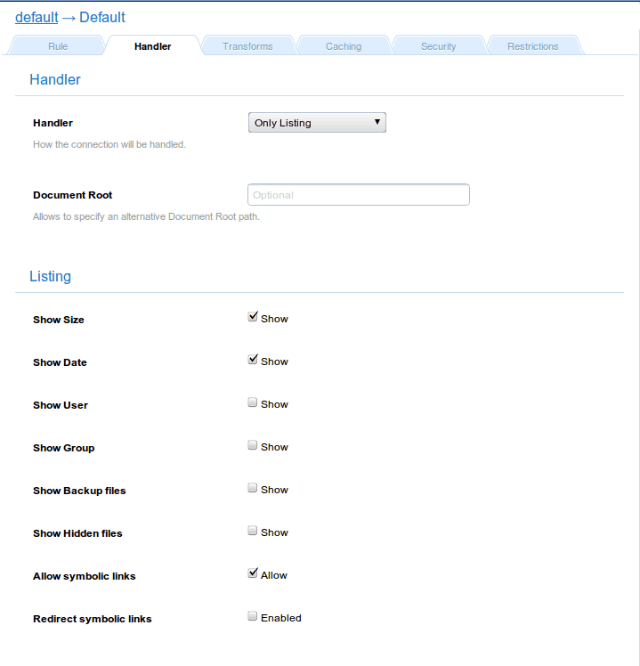

The List & Send (`common` internally) handler behavior depends
on whether it replies a request for a directory or a file.
In case a directory is requested, it will use the
Listing Only handler in order to
list its contents. And, in case a file is request, it will use the
File Sending handler.
Parameters
| Parameters |
Type |
Description |
allow_pathinfo |
boolean |
Makes the handler to stop parsing the
pathinfo string. Default: Disabled. |
allow_dirlist |
boolean |
Enables showing the contents of a
directory. |
-
This example shows the practical effect of pathinfo
-
$ echo "This is a test" > /tmp/1/2/test
$ curl http://localhost/1/2/test
This is a test
$ curl http://localhost/1/2/test/this/is/pathinfo
This is a test
$ curl -D - http://localhost/1/2/test.no | grep HTTP
HTTP/1.1 404 Not Found
Examples
Sample configuration
Field |
Value |
Handler |
Only listing |
Document Root |
None |
Show Size |
Enabled |
Show Date |
Enabled |
Show User |
Disabled |
Show Group |
Disabled |
Show Backup files |
Disabled |
Show Hidden files |
Disabled |
Allow symbolic links |
Enabled |
Redirect symbolic links |
Disabled |
Theme |
default |

Configuration screenshot
Indexes
Simply enable the desired file attributes to be shown under Listing,
and choose the HTML template to use (default -with the Cherokee logo-,
plain -a fixed width theme- and firefox3).
You can also include a Notice file to show its contents on top of
every automatically generated list.
Of course, the lists are sortable by any of the displayed attributes.